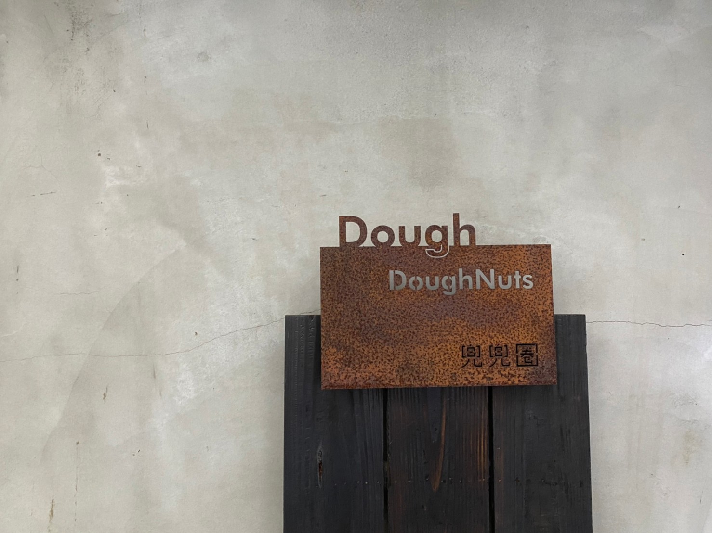
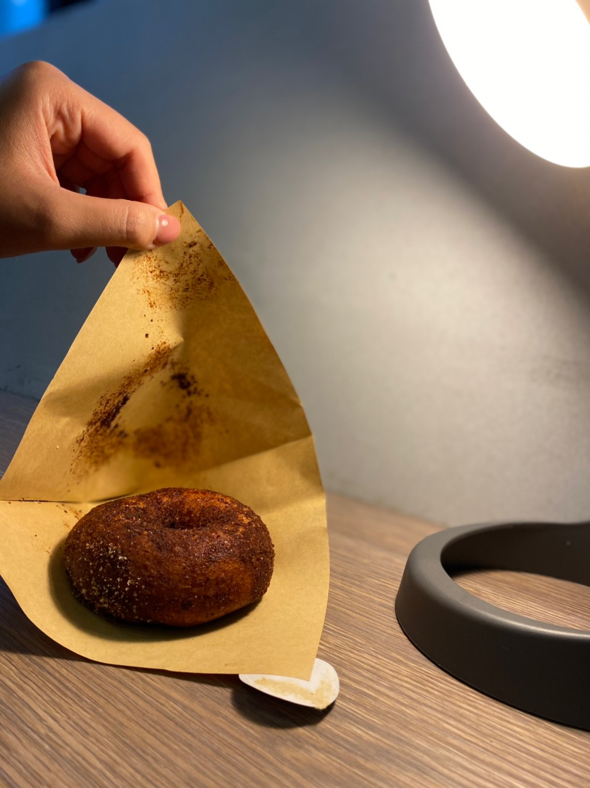
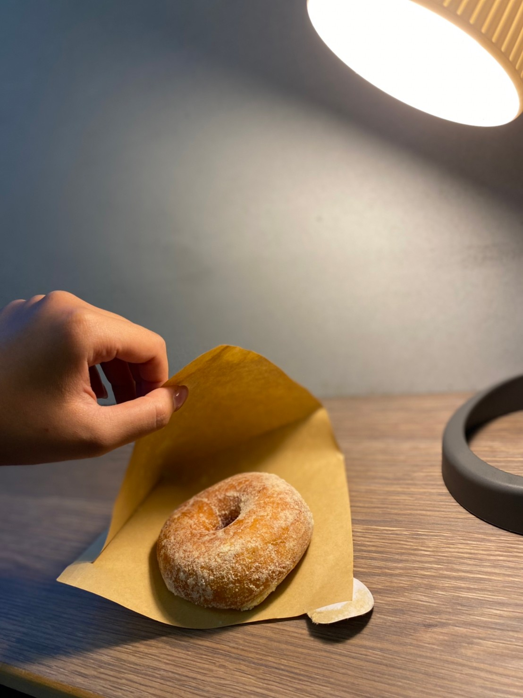
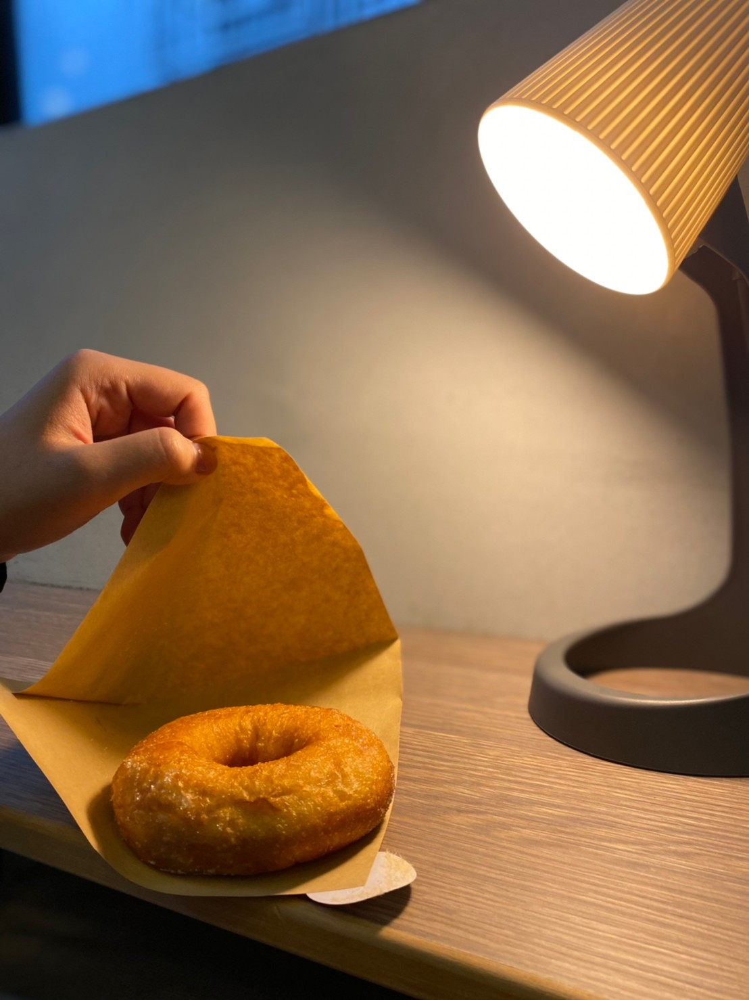
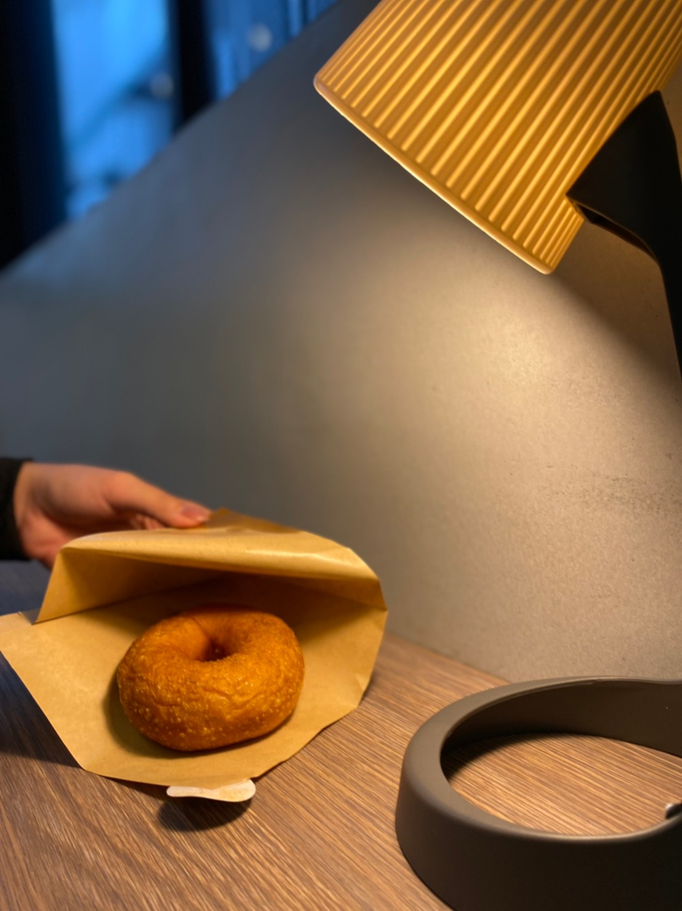
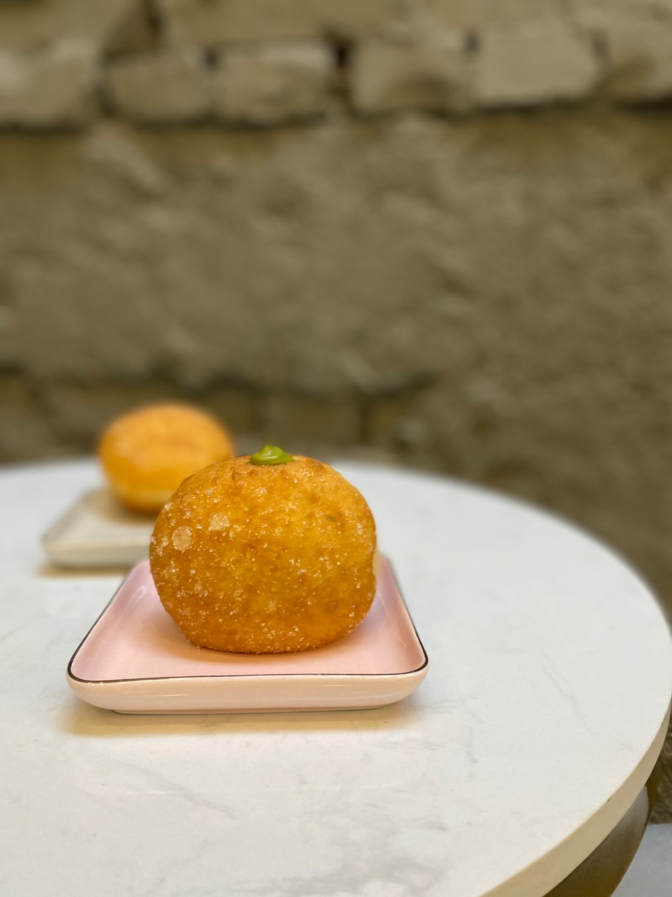
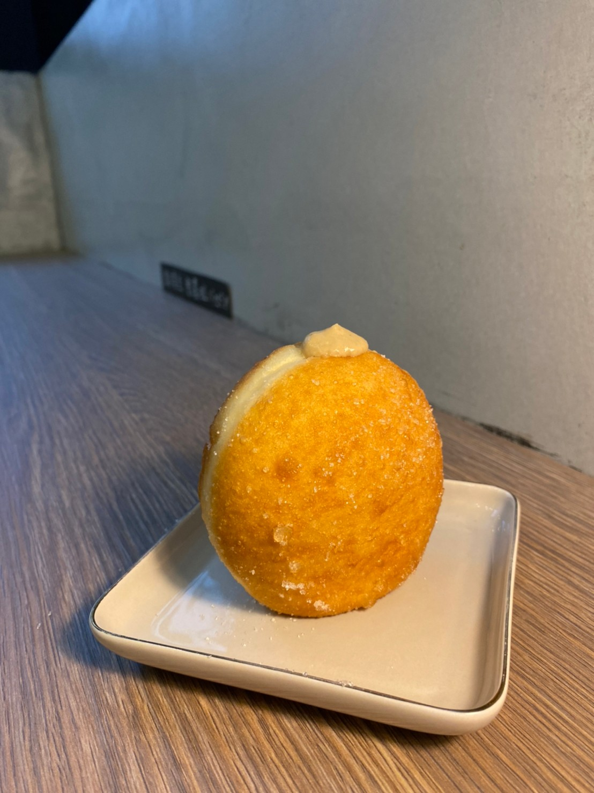

寧靜的巷弄 在小巧卻又五臟俱全的工作坊中 忙碌卻不失祥和 ; 生產著 桿製著
那份真誠
02th December 2021

關於「兜兜圈」:
不同以往市面上販售的甜甜圈，對闆娘而言，每一顆都是她用心下的結晶，
到底是什麼魔力居然能讓甜甜圈能在短時間內銷售完畢?這就要從麵團開始說起，
他們是利用天然酵母發酵並非使用人工香精，所以等待時程較長，以至於每日產量不多，
而之中最特別也最有別於其他店的小巧思就是他們會添加馬鈴薯泥一起桿製，所以口感會更飽滿軟Q且不易脹氣，
並以每日限定口味的方式製造新鮮感，以食材的新鮮度為重，
是鹽埕老巷中獨樹一幟的存在，是舊景注入新元素的證明，也是延續老街脈絡的新生命
到底是什麼魔力居然能讓甜甜圈能在短時間內銷售完畢?這就要從麵團開始說起，
他們是利用天然酵母發酵並非使用人工香精，所以等待時程較長，以至於每日產量不多，
而之中最特別也最有別於其他店的小巧思就是他們會添加馬鈴薯泥一起桿製，所以口感會更飽滿軟Q且不易脹氣，
並以每日限定口味的方式製造新鮮感，以食材的新鮮度為重，
是鹽埕老巷中獨樹一幟的存在，是舊景注入新元素的證明，也是延續老街脈絡的新生命

濃情黑巧克力
巧克力控的最佳首選，濃郁的巧克力內餡就如同人生，
苦中帶甜、卻又甜而不膩，也是更偏向大人味的巧克力，
外層撒上滿滿的可可粉也為整體增加了更深的巧克力氣息，
如同當時的髒髒包一樣，滿足包裹於整個雙唇，
也情不自禁揚起嘴角的幸福
苦中帶甜、卻又甜而不膩，也是更偏向大人味的巧克力，
外層撒上滿滿的可可粉也為整體增加了更深的巧克力氣息，
如同當時的髒髒包一樣，滿足包裹於整個雙唇，
也情不自禁揚起嘴角的幸福

蔓越莓乳酪
愛吃酸甜口的你一定要選這個!
甜甜的卡士達醬搭配酸感較重的蔓越莓乾，像極了愛情，
一甜一酸彼此交替著，
總是在甜蜜的相處中帶點酸感的小刺激，生活也才有了情趣。
蔓越莓與乳酪也是如此，
如果只有一昧卡士達的甜，而沒有任何的元素去刺激味蕾，
好吃卻又稍顯貧乏，又怎能凸顯出甜甜圈的特色所在，
所以蔓越莓的添加，就是讓整體加分、不或缺的存在
甜甜的卡士達醬搭配酸感較重的蔓越莓乾，像極了愛情，
一甜一酸彼此交替著，
總是在甜蜜的相處中帶點酸感的小刺激，生活也才有了情趣。
蔓越莓與乳酪也是如此，
如果只有一昧卡士達的甜，而沒有任何的元素去刺激味蕾，
好吃卻又稍顯貧乏，又怎能凸顯出甜甜圈的特色所在，
所以蔓越莓的添加，就是讓整體加分、不或缺的存在

奶酥同學
明顯感受到這款奶酥的與眾不同，它是細膩的沙沙口感，
帶點微甜的奶香氣，也算是這幾款之中最無負擔的一款，
不會讓你有大起大落的味蕾衝擊，
有的只是最簡單的樸實無華，並非讓你驚訝無比，
只是讓你享受最單純的奶香享受，
簡單來說，絕對是不愛重口味的安全牌
帶點微甜的奶香氣，也算是這幾款之中最無負擔的一款，
不會讓你有大起大落的味蕾衝擊，
有的只是最簡單的樸實無華，並非讓你驚訝無比，
只是讓你享受最單純的奶香享受，
簡單來說，絕對是不愛重口味的安全牌

花生也愛麻糬
花生內餡有點像是知名花生糖所擁有的味道，
一口咬下，滿嘴的花生香撲鼻而來，
而Q彈麻糬也為它的口感加分不少、層次也更加豐富。
就如同闆娘為這個甜甜圈所命名的，花生真的離不開麻糬，
兩者的結合，才能在傳統(花生)的味道中加點創新(麻糬)，
老少皆宜的好大眾口味
一口咬下，滿嘴的花生香撲鼻而來，
而Q彈麻糬也為它的口感加分不少、層次也更加豐富。
就如同闆娘為這個甜甜圈所命名的，花生真的離不開麻糬，
兩者的結合，才能在傳統(花生)的味道中加點創新(麻糬)，
老少皆宜的好大眾口味

椒鹽肉鬆
肉鬆本身的甜味當主體，再加上椒鹽的微鹹香嗆鼻當尾韻，
讓這顆甜甜圈瞬間多了一種意想不到的特別味道，
如果想吃偏鹹口的版本，這顆真的能成為你的命中注定，
吃的同時也較不膩口，而它所添加的小巧思(胡椒)，
也成了這家店專屬的賣點之一!
讓這顆甜甜圈瞬間多了一種意想不到的特別味道，
如果想吃偏鹹口的版本，這顆真的能成為你的命中注定，
吃的同時也較不膩口，而它所添加的小巧思(胡椒)，
也成了這家店專屬的賣點之一!

靜岡抹茶
偏大眾款抹茶，整體也是偏甜的，所以就算不敢吃太抹的你也能接受，
甜甜圈裡的內餡也是擠好擠滿，裡頭的抹茶醬也會不斷的流出，
雖然沒有想像中的驚艷，
但卻能滿足你短暫且空虛的甜食胃，
小小一口，心情加倍!
甜甜圈裡的內餡也是擠好擠滿，裡頭的抹茶醬也會不斷的流出，
雖然沒有想像中的驚艷，
但卻能滿足你短暫且空虛的甜食胃，
小小一口，心情加倍!

格雷伯爵
是此團隊最推薦購入的一款甜甜圈，真材實料吃的出來也聞的到，
且在每個內餡醬料上的處裡也絕不馬虎，
鼻子靠近它一吸...茶香瞬間飄散而出，
並沒有被其他甜味的光芒所掩蓋，甜度也則以微甜為主，
不怕吃完整顆奶油類會太膩，
很適合泡杯咖啡在旁，享受最放鬆的下午茶時光~
且在每個內餡醬料上的處裡也絕不馬虎，
鼻子靠近它一吸...茶香瞬間飄散而出，
並沒有被其他甜味的光芒所掩蓋，甜度也則以微甜為主，
不怕吃完整顆奶油類會太膩，
很適合泡杯咖啡在旁，享受最放鬆的下午茶時光~
高雄市鹽埕區大公路
營業時間: 一、二 : 公休 | 三~日 :
70
巷
6-3
號 營業時間: 一、二 : 公休 | 三~日 :
13:00-19:00